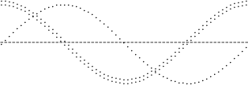

The pic language provides conditionals and looping. For example,
pi = atan2(0,-1);
for i = 0 to 2 * pi by 0.1 do {
"-" at (i/2, 0);
"." at (i/2, sin(i)/2);
":" at (i/2, cos(i)/2);
}
which yields this:

Figure 16-1: Plotting with a for loop
The syntax of the for statement is:
for variable = expr1 to expr2 [by [*]expr3] do X body X
The semantics are as follows: Set variable to expr1. While the value of variable is less than or equal to expr2, do body and increment variable by expr3; if by is not given, increment variable by 1. If expr3 is prefixed by * then variable is multiplied instead by expr3. The value of expr3 can be negative for the additive case; variable is then tested whether it is greater than or equal to expr2. For the multiplicative case, expr3 must be greater than zero. If the constraints aren’t met, the loop isn’t executed. X can be any character not occurring in body; or the two Xs may be paired braces (as in the sh command).
The syntax of the if statement is as follows:
if expr then X if-true X [else Y if-false Y]
Its semantics are as follows: Evaluate expr; if it is non-zero then do if-true, otherwise do if-false. X can be any character not occurring in if-true. Y can be any character not occurring in if-false.
Eithe or both of the X or Y pairs may instead be balanced pairs of braces ({ and }) as in the sh command. In either case, the if-true may contain balanced pairs of braces. None of these delimiters are seen inside strings.
All the usual relational operators my be used in conditional expressions; ! (logical negation, not factorial), &&, ||, ==, !=, >=, <=, <, >.
String comparison is also supported using == and !=. String comparisons may need to be parenthesized to avoid syntactic ambiguities.